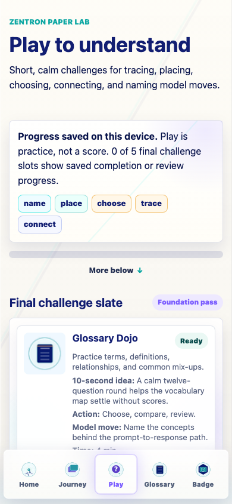
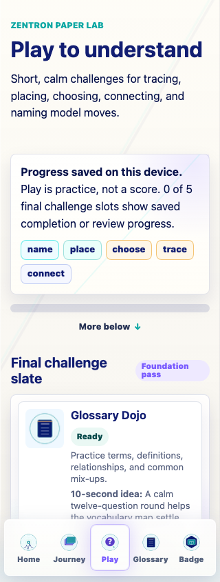
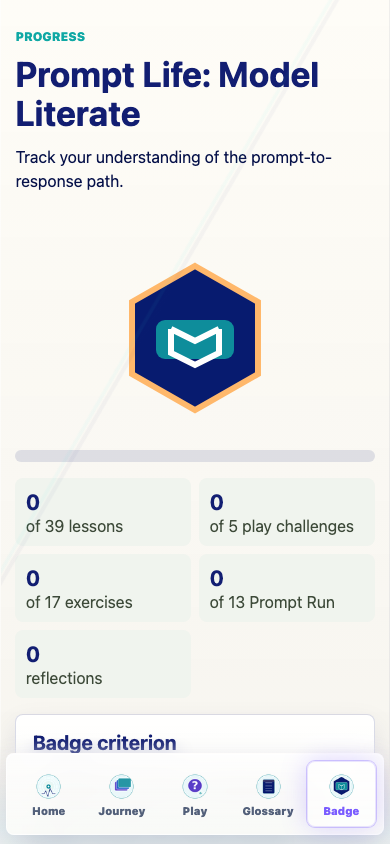

Prompt Life v0.26.1
A small foundation pass for calm, replayable Play challenges: shared model, shared storage, shared UI chassis, final slate registry, and mobile QA.
Play now has a consistent foundation for five final challenge slots: Glossary Dojo, Context Stack, Probability Picker, Prompt Run, and Attention Match. The pass tracks practice progress without scores, leaderboards, streaks, or punitive states.
promptlife.playChallenges.v1.PlayChallengeShell and board primitives.New ZenTron Paper Lab header, calm progress panel, and final challenge slate.
Status, attempts, completion state, progress rail, 10-second idea, model move, time, and related stages.
Start, repeat, review, and completion actions notify shared Play progress while preserving Dojo mastery.
Completion now marks the shared prompt-run challenge complete while keeping old Prompt Run progress.
Insight unlock marks context-stack complete while preserving legacy game insight behavior.
Current Attention Weave is reframed as the foundation version of the final Attention Match slot.
Added as a disabled foundation-ready card and placeholder route, without fake progress.
Play stat now reads 0 of 5 play challenges and reset copy names Play challenge progress.
npm run typecheck: passed.npm run build: passed with the existing Vite large-chunk warning.npm run build:pages: passed with the existing Vite large-chunk warning after a sequential rerun. A parallel first attempt hit a temporary dist/assets cleanup race.npm run audit:answers: passed.


Screenshots were captured in an isolated browser profile so existing user progress was not changed during QA.